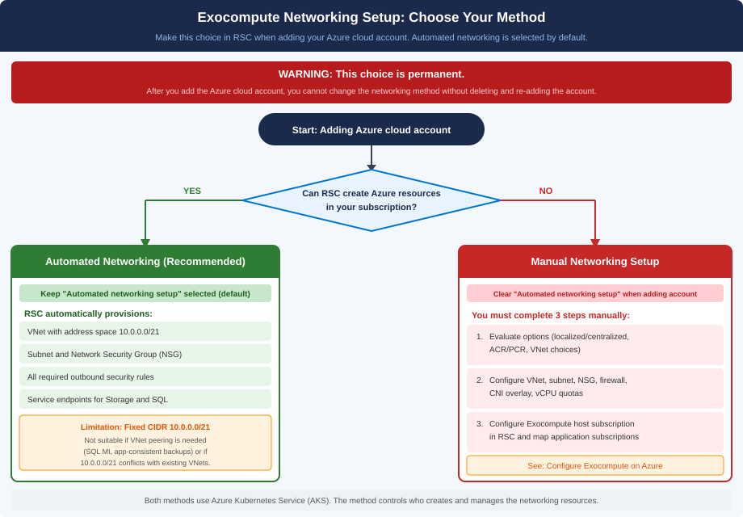

Automated versus manual networking setup
RSC provides two methods for configuring Exocompute networking on Azure — automated and manual. The method you choose when adding your Azure cloud account is permanent and cannot be changed without deleting and re-adding the account.
Networking setup methods

RSC provides the following networking methods for configuring Exocompute on Azure:
- Automated networking setup: Simplifies the process by enabling RSC to orchestrate the end-to-end creation of necessary networking resources. This approach minimizes manual intervention and reduces common configuration errors.
- Manual networking setup: Remains available for organizations that require full control over their network architecture or have strict security policies that prevent granting Create, Read, Update, and Delete (CRUD) permissions to external services.
Compare automated and manual networking setup
| Aspect | Automated networking setup | Manual networking setup |
|---|---|---|
| Overview |
RSC automatically creates and configures the VNet, subnet, and NSGs. |
You must manually set up the network infrastructure in Azure according to Rubrik requirements. |
| Use cases | Ideal for rapid onboarding, Proof of Concepts (PoCs), or simplified management. | Ideal for organizations that cannot grant CRUD permissions or require highly manual oversight. |
| Advantages | Minimizes manual intervention and reduces delays caused by network configuration errors. | Enables total authority over existing network security and IP addresses without granting extra permissions. |
| Considerations | Requires a dedicated permissions group for resource creation at the Exocompute resource group scope. | Higher management overhead and risk of configuration errors during manual setup. |
How to select your networking method
You select your networking method when adding an Azure cloud account to RSC using the Manage Granular Permissions page.
- Default selection: The
Automated networking setuppermission category check box is selected by default. - To use manual setup: You must manually clear the
Automated networking setuppermission category check box when adding the Azure cloud account.
Automated networking setup check box later. To change the
networking method, you must delete the Azure cloud account and add it again with the
required permission category.Automated networking setup
This method streamlines the protection of Azure workloads by automating the infrastructure deployment required for Exocompute. When enabled, RSC handles the complex task of provisioning regional network resources, ensuring they meet all technical requirements for archival, indexing, and security operations.
RSC requests permissions at the resource group scope to adhere to the principle of least privilege. This restricts access to the designated Exocompute resource group, preventing unauthorized access to production networking or other sensitive workloads in your subscription.
- Provisions regional resources: Creates a VNet, subnet, and Network Security Group (NSG) on-demand in each region where an Exocompute cluster is requested.
- Configures IP addresses: Assigns a
10.0.0.0/21address space to the VNet and subnet to accommodate approximately 2000 IP addresses. - Applies security rules: Automates all required high-priority security rules for Azure networking and Blob Storage.
- Enables service endpoints: Adds service endpoints for storage and SQL by default.
To use the automated networking setup method, you must retain the default selections
for the Automated networking setup permission category on the
Manage Granular Permissions page when adding your Azure cloud account.
- RSC automatically manages all networking steps without further intervention.
- You can optionally map Azure cloud accounts to centralized Exocompute, as described in Mapping Azure accounts to centralized Exocompute.
- You can optionally configure Private Container Registry (PCR) and advanced settings to meet specific environment requirements, as described in Configuring Private Container Registry and Advanced settings for Exocompute on Azure.
Automated networking setup limitations
10.0.0.0/21. This may not
be compatible with the following environments:- Peering requirements: Environments requiring VNet peering, such as Azure SQL Managed Instance or app-consistent virtual machine backups, may not be compatible with this fixed range.
- IP conflicts: If the fixed
10.0.0.0/21range intersects with your existing VNets, peering will fail. You must use manual networking to define a non-conflicting range.
Manual networking setup
The manual networking setup method is best suited for organizations with rigid security or architectural requirements. This method enables you to integrate Exocompute into complex, pre-existing infrastructures or custom VNet configurations that require specific IP address ranges.
To use the manual method, you must clear the Automated networking
setup permission category check box on the Manage Granular Permissions
page when adding your Azure cloud account to RSC.
- Evaluation of options: Evaluating localized versus centralized, Rubrik-hosted ACR versus PCR, and network choices, as described in Evaluate Exocompute on Azure options.
- Network set up: Manually creating the VNet, subnet, and NSGs according to Rubrik requirements, as described in Set up network for Exocompute on Azure.
- Exocompute configuration: Configuring the Exocompute setup on RSC, as described in Configure Exocompute on Azure.
- Mapping Azure accounts or configuring a PCR, as described in Mapping Azure accounts to centralized Exocompute and Configuring Private Container Registry.
- Configuring advanced Exocompute settings, as described inAdvanced settings for Exocompute on Azure .